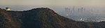

De: La Frikipedia, la enciclopedia extremadamente seria.
De: La Frikipedia, la enciclopedia extremadamente seria. De: La Frikipedia, la enciclopedia extremadamente seria.
| De la serie Países del planeta tierra: | |||||
| Los Ángeles | |||||
|---|---|---|---|---|---|
| |||||
| Lema: 1 mujer = 1 bikini vendido | |||||
| Himno: Franco, franco que tiene el culo blanco...
| |||||
| 
| |||||
| Capital | ¿Hollywood? | ||||
| Mayor ciudad | El barrio chino | ||||
| Lenguas oficiales | Español, Inglés y Gñapes | ||||
| Gobierno | Anarquía | ||||
| Terminator" | Arnold streusenager... o como se escriba | ||||
| Área | + base x altura | ||||
| Población | 6.000.000 chicas y 100 hombres | ||||
| Moneda | Dólar, aunque lo prefieren más en billete que en moneda | ||||
| Zona horaria | GTM + 12 - 34 = 1 hora | ||||
| Dominio Internet | .schwarzenegger | ||||
| Código telefónico | .xxx
| ||||
| ¡¡Chicas en bikini!! | |||||
Los Ángeles, California es la ciudad más extensa y con más mujeres en bikini de los Estamos Hundidos en América y llamada de manera abreviada o a los que les da pereza decir la palabra completa: L.A. que significa: Los Angeleños ya que así se les dice a las personas que vagabundean o habitan en esta ciudad.
En 1821 pasó de ser un estado libre y soberano en México a ser un país nazi y racista en EUA del sur.
País situado al noreste de Texas, sus importaciones son droga, esclavos para sus actores, películas porno, más droga, entre muchas otras.
Su principal clase social es... actores de baja calidad entre otras personas variadas la cuales también destacan las actoras y/o actrices (como las quieras llamar) también tienen gran parte los emos y los vaqueros con sombrero y bigotito también llamados latinos o mexicanos.
En donde el sueño americano nunca florece y no se cumple ni los sueños más mínimos de la gente que viaja hasta ahí, los que solo piensan que por estar parados ahí en una esquina sin hacer nada les pagaran millones. Aunque solo el 10% de ellos tiene éxito, y el resto, o se quedan en la pobreza, se suicidan o se dedican a otra cosa. Una ciudad conocida por sus no muy buenos programas, realitys, etc. Famosos de esos que duran poco y después uno se olvida, de esos que duran bastantes años, y fallecen en situaciones embarazosas (drogados, o alcoholizados, en una habitación de hotel con un consolador en la mano) y siempre están los medios que hablan hasta que se olvidan de eso. Además, es la ciudad hermana de la otra ciudad, más gay grande de caCalifornia que es San Francisco (o San Pancho, como quieras llamarle) San Francisco la ciudad de los tiranías, del barrio chino, la prisión de alcatraz, y la ciudad famosa por sus hippies (actualmente no se ven muchos, pero en los 70, estaban repletos de ellos).
Los Ángeles al ser una ciudad muy visitada, tienen muchas personas, por eso tiene mucha discriminación y racismo (no, no es lo mismo). Distintos tipos de personas, según su estado económico, su color de piel, etc.
Están los:
Proclamado como el barrio prestigioso y más popular de Los Ángeles, es el rey de las películas, del cine, de las estrellas porno y de los cerros con letrero, teniendo en cuenta que los estudios Paramount le tiene tanto aprecio y que hasta han filmado ya más de 1000 films en tan pocos años, incluidos las Pasiones de Cristo (1,2,3 y el regreso) y films sobre su propia ciudad y las típicas películas pr0n (como la que estás viendo ahora mismo).
También es mundialmente famoso por el cartel pegado con cinta a las montañas que dice: "Hollywood" (más claro imposible), claro que siempre han pirateado el cartel y cambiado a "Joligüd" para hacerle homenaje a el día que México cumpla 100 años y/o para que los latinos lo roben.
Lugar donde eventualmente están los famosos; día con día para ver como los turistas comen el cemento rodeado por cuadros con estrellas. Muchos famosos que habitan Hollywood están aquí plasmados por parte de Fox y Paramount, además de contar con Universal Studios por sus grandes carretas de dinero actuaciones en cine y televisión. Consta con más de 500 estrellas en el suelo, pisadas por vagos en las noches y turistas en el día.
Actualmente genera dinero por las grandes cantidades de visitas al día, el cual se reparte entre los 3 Estudios de filmación de ahí, dejando a los ganadores de las estrellas sin pasta.
LAX (Los Ángeles X o Los Alienígenas X) es el aeropuerto internacional de Los Ángeles con más de 100 vuelos a diario a distintos destinos e innumerables quejas por parte de los pasajeros por dejarlos varados en medio del Océano Pacífico e indico o robar las maletas de éstos. Tiene una estructura en forma de esfera fuera de su estacionamiento y grandes curvas y pistas para los autos siendo la primera atracción de los amantes de las carreras callejeras para probar derrapes y/o retas entre turistas nuevas y sacarles el dinero. Lax también llamado Laxante por parte de los turistas enojados ya que los aviones cuentan con comida podrida.
Santa Mónica es una playa californiana popular de Los Ángeles y por defecto es la competencia de la playa de Malibú, pero esta playa puede que sea popular gracias a su comida y centros de atracción, aunque conectada con la playa y el mar, tiene una feria y una rueda de la fortuna construida a partir del accidente de Chernobyl como recuerdo de su explosión nuclear. Cuenta con barrio chino, italiano, holandés, portugués, indio, japonés, mexicano y demás países aliados con los que conecta California.
Esta playa es especial es conocida por su política ya que hacen homenaje a los Nazis matando no aceptando a los cubanos y a los vagabundos en esa playa.
Empresa lavadora de cerebros y asesina a sueldo de creadores de Fox Studios sacados después de Fox para hacerle a éste último competencia. Penosamente ha sido descontinuado en varias ocasiones por su baja calidad de vídeo y presupuesto de películas, las cuales siempre se graban en Los Ángeles o en Hollywood. Todas las películas filmadas ahí no han recibido premio alguno ya que la Fox se los lleva todos.
Actualmente los productores piensan en su retiro debido a que Fox ha bombardeado a Paramount y demás empresas con múltiples canales de televisión y sus demandas en películas, llevando a estos últimos a la quiebra de Paramount. Muchos empleados de Paramount se pasaron a Fox debido a que ya presentían algo.
Una de las competencias en Los Ángeles en cine es también Universal Studios, que al igual que Papamount Studios, le gusta rodar películas en sus ciudades, cosa que no pasa con las demás productoras de cine, en concertación se dedican a aburrir la gente entretener a la gente con algo de acción, aunque a veces no lo logra y termina haciendo estudios nuevos en demás ciudades para probar suerte.
Fox Studios es el lugar donde se filman más películas que en todo el mundo, estos estudios fueron creados en 1979 al salir las primeras animaciones de Los Simpson y el creador de la Fox es claramente Vicente Fox aunque no lo creas, que con bigote y botas se puede llegar muy lejos (o tal vez no) estos estudios también tienen una extensa variedad de programas y series un ejemplo es: Los Simpson y Padre de familia aunque son creación de un mismo tipo, y estas series y animaciones se albergan en Fox Studios ya que le dan mucha publicidad, bueno no mucha, nada más en cada episodio.
Estos estudios son el inicio de muchas carreras de grandes y no tan grandes artistas, y el creador de los estudios planeo el ataque contra las torres gemelas y se lo mando a Obama Bin Laden para que lo llevara a cabo y no ensuciarse él las manos.
Películas que se filman ahora
La tierra donde se encuentra el observatorio fue donada por un general que tiene el mismo nombre que el observatorio (Qué ironía) y en su testamento tenìa que con todo el dinero que le quedaba se construiría el observatorio, ese fue su error y por eso lo asesinaron al siguiente día de escribir su testamento.
El observatorio de los ángeles o también llamado Observatorio Griffith, está ubicado claramente en los ángeles y se encuentra en los alto del cerro de todo en el barrio hollywoodense y es la atracción espacial-turística más visitada en hollyshitwood, hay dos teorías de como se ha creado este observatorio la primera es por la inspiración divina diox y la segunda es por la inspiración en las películas hollywoodenses
Gracias a la 2ª guerra mundial sirvió de algo el observatorio ya que con èl se les daba indicaciones a los pilotos de las naves para que no se estrellarán con algún pájaro.
Malíbu es el puerto/playa más famoso de california ya que tiene muchas chicas en bikini y la mayor exportación de cerveza del mundo y por defecto es la playa rival de Santa Mónica ya que siempre se disputan pero en realidad el puerto de Malíbu es más famoso gracias a que Arnold Schwarzenegger vive cerca de ahí y invita a sus amigos famosos y a gente que vio la película de "Terminator" y es su fan y hace las mejores fiestas en fines de semana.
Esta playa es de las más hermosas que existen y por lo tanto nunca se contamina en ella y si algún policía gringo te ve contaminando te golpea hasta más no poder o te meten a las cárcel 3 años mínimo sin derecho a fianza.
El nombre de Downtown se le da a el centro de Los Ángeles ya que es muy popular por rodar películas de muy baja calidad de parte de Fox Studios y Paramount Studios, se caracteriza por estar siempre lleno de latinos haciendo murales callejeros y afroamericanos fumando hierba... y también vendiéndola.
Es también donde abundan edificios gigantes y las calles de estos sitios son muy frecuentadas y es donde ocurren más asaltos y robos a ancianitas, y gracias a los suicidios y matanzas es el lugar donde menos población hay.
También derivado de la palabra topo, esta se refiere a la extensión con la que cuenta la ciudad. Los Ángeles tiene un área total de 1.290.6 km², de los cuales 1.214,9 km son tierra, y el resto (75,7 km²), son de tiendas donde venden bikinis. Esto la convierte en una de las ciudades más grandes de EUA.
Las clases de población son las siguientes:
Los ángeles es una de las ciudades más expuestas a Terremotos, Inundaciones, Vandalismo, huelgas de mujeres con bajo sueldo, destrucción por parte de Terminators y ataques por parte de Godzilla, eso la convierte también en una de las ciudades más peligrosas de Estados podridos de América pero aún así sigue estando siempre lleno de personas desinteresadas hacia el tema gracias a que nunca se a visto expuesta a ninguna falla sísmica o ningún acercamiento de parte de Godzilla.
La más escasa en todo el país Estados podridos de América, escasa por la gran cantidad de casas y edificios y gracias a las abejas asesinas que habitan la zona las cuales destrozan cada flor o planta que nazca, claro que algunos habitantes de Los Ángeles por tal de tener alguna planta o flor en sus casas ponen un jardín lleno de hermosas plantas verdes llamada: "Marihuana", esta planta es muy compleja y se puede podar a diario ya que crece sólo echándole un poco de agua, esta planta puede soportar todo tipo de climas y es medicinal, por lo tanto puede curarte de muchas cosas y si la llegas a fumar hasta te manda a volar.
Animales por aquí, animales por acá aunque tambièn estos animales son llamados actores y actrices, estos extraños seres habitan a lo largo y a lo ancho (aunque tambièn a lo alto) de Los ángeles, los más raros y complejos habitan en esta ciudad desde: Jim Carrey pasandosela por Pamela Anderson y hasta Hugh Hefner.
Y hablando en serio en Los ángeles habitan puros leones ya que los magos callejeros (vease vagabundos), los utilizan para hacer magia con ellos.
La cultura de la ciudad de los ángeles es muy escasa ya que todo depende un 98% de la televisión y un 1% de las inmigraciones y 59% de películas Pr0n de los padres, la cultura de esta ciudad también se basa en dulces/comida chatarra y vender chicles en Hollywood.
Los Ángeles, es conocida por sus amables y estudiosos estudiantes que estudian incansablemente para alcanzar una excelencia académica y obtener un trabajo digno y que pague bien, claramente algunos no logran ni entrar a la universidad porque se ponen a hacer películas Pr0n caseras, y se drogan con otros artistas de Hollywood.
La industria del cine es una de las más importantes dentro de la ciudad, especialmente en Hollywood ya que siempre están grabando una película a lo largo y ancho de la ciudad, aunque sea una película Pr0n.
En sus múltiples escuelas de alto nivel académico y gran prestigio puede tener entre laboratorios donde te muestran como matar gente con químicos hasta más laboratorios donde te enseñan a hacer y/o fabricar droga. Estas son las clásicas cosas donde se alistan los estudiantes:
Por lo general, es muy abundante. Por algo será, que el gobernador "Terminator", quiere hacer un segundo estado, con la misma capital llamado Los Ángeles, pero que no quiere dar más detalles. Solo dijo además de eso, que iba a ser después de que los polos terminen de derretirse, y que en Inglaterra se oficialice el spanglish, y que va a ser, en la zona de Turkmenistán, Afganistán e Irán, (los países que están entre Rusia, la India y China, para ser más claros).
Los Ángeles ha tenido una carrera aunque no es coche ni humano en el entretenimiento digital y deportivo muy famosa debido a las contrataciones de múltiples empresas y de Arnold "Schuacheneger" para múltiples videojuegos, películas y eventos deportivos para lavar el cerebro la gente y que éstos hagan ricas a las empresas tengan entretenimiento digital en su hogar con la familia
También fue sede de grabar y/o crear el un juego muy popular llamado "Midnight club: Los Ángeles" o también llamado así: Midnaig kluv: los angelez por los latinos que habitan por la zona, y gracias a ese juego se hizo más famosa la ciudad ya que muestra las mejores carreras callejeras de los Estados Unidos aunque también gracias a el juego fue vandalizada por Personas que trataban a toda costa de correr en las calles que aparecían en dicho juego.
En Los Ángeles abundan muchos deportes como el arte del grafiti, el patinaje, el béisbol y por supuesto las carreras clandestinas.
Este tipo de carreras son las clásicas de persecuciones que se realizan a través de las ciudades que llevan a vagos de la ciudad a ganar dinero con autos sumamente modificados, combinados con Street Dance y mujeres bailando. En las noches, muchos de estos pilotas pilotan sus autos en medio de gente que regresa del trabajo hacía sus casas burlando autoridades como el tránsito o la policía local. Evadiendo clavos por las calles y vidrios rotos sólo el ganador se merece el respeto de tal barrio donde se localicen las carreras, haciéndose ganar también el derecho de manejar como si las calles le perteneciesen.
Aunque en esa ciudad no hay muchas patrullas a media noche, la policía manda a tomar por culo a los corredores ilegales cuando los autos de los pilotos rebasan los 180 kilómetros por hora, dejando comer goma quemada en vez de rosquillas con café.
En cuanto al grafiti se le puede observar en medio de los grandes canales de Los Ángeles, o en cualquier callejón no abundante, simplemente igual se observa pintado en cualquier casa de ahí mismo o departamento clandestino donde habitan vagos o gente con malas intenciones. Muchos grafitis se distinguen en murallas donde a veces se concursa por la mejor letra gorda con colores en bordes 3D. Aunque no es abundante, esta arte confundida con deporte callejero tiene el mismo nivel de peligro de quedar tras las rejas como las carreras ilegales.
Una de las principales atracciones turísticas al llegar a Los Ángeles son los bares y antros donde la gente se divierte, claro que en Los Ángeles la forma de divertirse es diferente y por eso contratan Strippers para que la gente baile con ellos toda la noche. Alguna gente comenta que las Strippers les roban el dinero mientras la gente baila al lado del tubo o sobre él, razón por las denuncias de ciudadanos, la policía sólo manda a tomar por culo a la gente que se queja de dicho problema.
Autor(es):